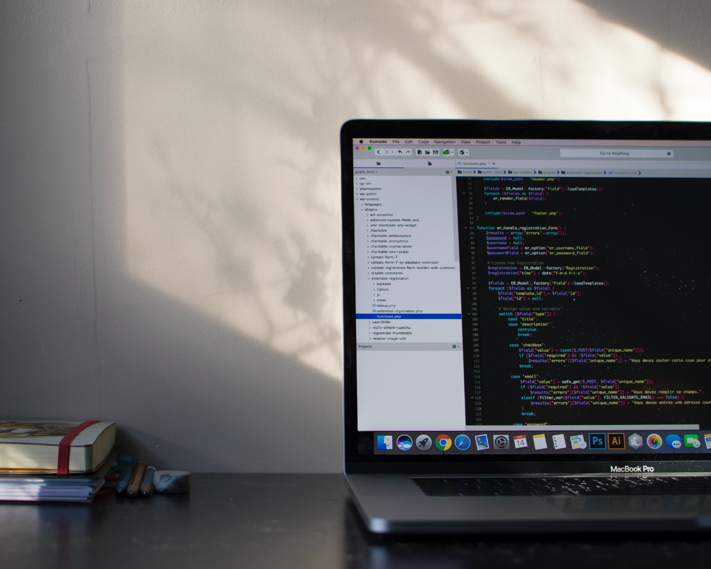

Portfolio
Anna Clausen
Thank you for taking the time to learn more about my background, expertise and projects.

I am a marketer and software engineering student.
I spent 8 years of my professional life working with startups in various industries including sustainable construction, fintech and edtech. With the opportunity to build skills in graphic design, demand generation and content creation, I found myself drawn to web development time and time again. Having built a number of sites with visual interfaces, I'm excited to learn programming from the ground up.
Background
- Stellic
- Built and executed a multi-channel approach for demand generation that included outbound sales, email marketing, events, social and paid media for fast-growing, Edtech startup.
- Ushur
- Practiced cross-functional teamwork at an AI Fintech startup, frequently collaborating with executives as well as Sales, Product, and Engineering teams, in order to develop and go-to-market programs and product marketing processes for all new products.
Expertise
- Growth Marketing
- RM & Marketing Automation
- CMS Management
- Project Management
- Content Marketing